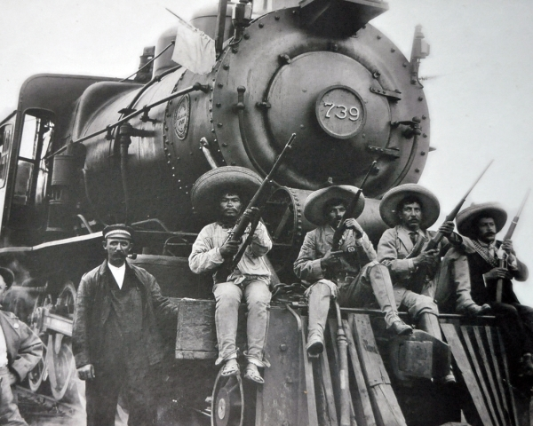
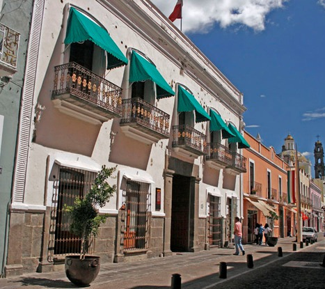
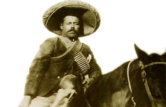
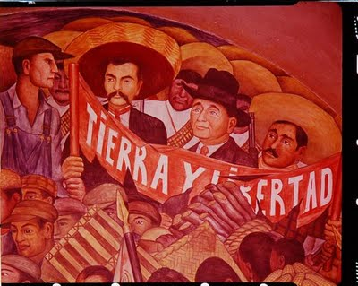
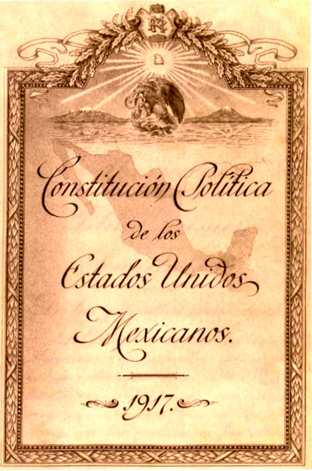
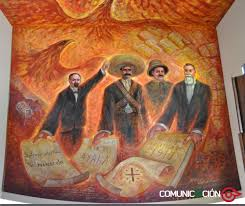

La Revolución Mexicana
Introducción
La Revolución mexicana fue un conflicto armado que tuvo lugar en México, dando inicio el 20 de noviembre de 1910. Históricamente, suele ser referido como el acontecimiento político y social más importante del siglo XX en México.
Los antecedentes del conflicto se remontan a la situación de México bajo el Porfiriato. Desde 1876 el general oaxaqueño Porfirio Díaz ejerció el poder en el país de manera dictatorial. La situación se prolongó por 34 años, durante los cuales México experimentó un notable crecimiento económico y estabilidad política. Estos logros se realizaron con altos costos económicos y sociales, que pagaron los estratos menos favorecidos de la sociedad y la oposición política al régimen de Díaz. Durante la primera década del siglo XX estallaron varias crisis en diversas esferas de la vida nacional, que reflejaban el creciente descontento de algunos sectores con el Porfiriato
- Cuando Díaz aseguró en una entrevista que se retiraría al finalizar su mandato sin buscar la reelección, la situación política comenzó a agitarse. La oposición al gobierno cobró relevancia ante la postura manifestada por Díaz. En ese contexto, Francisco I. Madero realizó diversas giras en el país con miras a formar un partido político que eligiera a sus candidatos en una asamblea nacional y compitiera en las elecciones. Díaz lanzó una nueva candidatura a la presidencia y Madero fue arrestado en San Luis Potosí por sedición. Durante su estancia en la cárcel se llevaron a cabo las elecciones que dieron el triunfo a Díaz.

Movimiento de los hermanos Serdán
Los libros de historia nacional cuenta que la Revolución Mexicana inició el 20 de noviembre de 1910, pero la historia oficial inicia en Puebla, dos días antes, con los hermanos Serdán: los primeros mártires del movimiento. Fueron ellos quienes bajo los ideales de libertad y democracia, lucharon antes que nadie por un cambio en la sociedad mexicana.
- Aquiles Serdán, el menor de tres hermanos, fue uno de los hombres con espíritu antirreeleccionista que apoyó, desde el inicio, a Francisco I. Madero; en Puebla, Serdán fundó el club político: Luz y Progreso el que editó el semanario La No Reelección y cuyo tiraje fue muy corto debido a la falta de fondos de los miembros del club. Es en este semanario en el que las primeras ideas revolucionarias comenzaron a difundirse, sus páginas presentaban la afirmación que aseguraba que la República sería salvada, no por los hombres acostumbrados a gobernarla en forma despótica, sino “Por los hombres que no hayan manchado sus conciencias cometiendo atentados contra la Ley”. Ante estas publicaciones e ideas, Díaz comenzó a vigilar a los hermanos Serdán, en especial a Aquiles.
- Máximo Serdán, hermano menor, fue de los primeros revolucionarios que lucharon en una notoria desventaja contra los casi mil soldados que el gobernador envió para terminar con los rebeldes.
- Carmen Serdán, hermana mayor de Aquiles, fue de las pocas sobrevivientes de ese conflicto; ella subió armada al techo de su casa para incitar a los vecinos a unirse a la lucha, fue herida por una bala y, después del enfrentamiento, encarcelada junto con su madre en la cárcel de la Merced.

|

|
La Revolución Mexicana
Emiliano Zapata
(San Miguel Anenecuilco, México, 1879 - Morelos, 1919) Revolucionario agrarista mexicano. Hijo de una humilde familia campesina, Emiliano Zapata trabajó como peón y aparcero y recibió una pobre instrucción escolar.
Tenía veintitrés años cuando apoyó a la Junta de Cuautla en sus reivindicaciones por los ejidos de Morelos, su estado natal. La persecución desatada contra la Junta por el régimen porfirista lo llevó a Cuernavaca y luego a México como caballerizo del ejército.
De regreso en Morelos, Emiliano Zapata retomó la defensa de las tierras comunales y, en 1909, fue designado jefe de la Junta de Ayala. Al frente de un pequeño grupo armado, ocupó las tierras del Hospital y las distribuyó entre los campesinos.
Mientras el gobernador de Morelos, representante de los intereses de los terratenientes, enviaba fuerzas contra él, Genovevo de la O se sublevó en Cuernavaca. En el curso de los dos años siguientes, otros campesinos se levantaron en armas, entre ellos Tepepa, Merino y el maderista Torres Burgos, con quienes se alió Zapata. En marzo de 1911 se adhirió al plan de San Luis Potosí proclamado por Francisco I. Madero y, a la muerte de Torres Burgos, fue designado «jefe supremo del movimiento revolucionario del Sur».
Tras la caída de la dictadura de Porfirio Díaz, pronto aparecieron las discrepancias entre Zapata, quien reclamaba el inmediato reparto de las tierras de las haciendas entre los campesinos, y Madero, que por su parte exigía el desarme de las guerrillas. Por fin, Zapata aceptó el licenciamiento y desarme de sus tropas, con la esperanza de que la elección de Madero como presidente abriera las puertas a la reforma.
La Revolución Mexicana
Francisco Villa

(Doroteo Arango Arámbula) Revolucionario mexicano (San Juan del Río, Durango, 1876 - Parral, Chihuahua, 1923). Campesino pobre, huérfano y con escasa formación, cuando estalló la Revolución de 1910 llevaba varios años fugitivo en las montañas por haber asesinado a uno de los propietarios de la hacienda donde trabajaba.
Enseguida Pancho Villa se unió a Madero en su lucha contra la dictadura de Porfirio Díaz, y demostró una habilidad innata para la guerra. Aprovechando su conocimiento del terreno y de los campesinos, formó su propio ejército en el norte de México, con el cual contribuyó al triunfo del movimiento revolucionario.
En 1912 fue encarcelado, al sospechar el general Victoriano Huerta que estaba implicado en la rebelión de Orozco en defensa de las aspiraciones sociales del campesinado, que Madero había postergado. Consiguió escapar a los Estados Unidos y, tras el asesinato de Madero, regresó a México y formó un nuevo ejército revolucionario, la División del Norte (1913).
Con ella apoyó la lucha de Venustiano Carranza y Emiliano Zapata contra Huerta, que se había erigido en dictador. Juntos le derrocaron en 1914; pero después de la victoria de esta segunda revolución, Villa y Zapata se sintieron defraudados por Carranza, y volvieron a tomar las armas, ahora contra él. Esta vez la suerte militar no estuvo de su parte: Álvaro Obregón derrotó a los villistas y Carranza se consolidó en el poder, logrando el reconocimiento oficial de su gobierno por los Estados Unidos.
La Revolución Mexicana
Francisco I. Madero
(Francisco Ignacio Madero, llamado erróneamente Francisco Indalecio Madero; Parras de la Fuente, Coahuila, 1873 - México, 1913) Político mexicano cuyo pronunciamiento contra el régimen de Porfirio Díaz desencadenó la Revolución mexicana. Hombre sencillo e idealista, de firmes convicciones democráticas y sincera preocupación social, Francisco I. Madero quiso superar mediante las urnas la anquilosada dictadura de Porfirio Díaz, presentando su candidatura como cabeza del Partido Antirreeleccionista en los comicios de 1910. Sin embargo, tras ser detenido en plena campaña electoral y verse forzado al exilio, entendió que sólo un levantamiento popular podía traer un verdadero cambio.
Redactó entonces desde el exilio el Plan de San Luis, un programa político que incluía un llamamiento a alzarse en armas contra el régimen dictatorial de Díaz el 20 de noviembre de 1910, fecha de inicio de la Revolución mexicana. El triunfo revolucionario lo elevó a la presidencia (1911-1913), pero, incapaz de contentar a los líderes agraristas radicales y presionado a la vez por los sectores conservadores y por los Estados Unidos, acabó siendo traicionado y asesinado por Victoriano Huerta, uno de sus generales de confianza. De este trágico modo terminaron los empeños reformadores de un hombre honesto; un final que, por desgracia, no fue infrecuente en los turbulentos inicios de la Revolución.
La Revolución Mexicana
Porfirio Díaz
(José de la Cruz Porfirio Díaz Mori; Oaxaca, 1830 - París, 1915) Del nombre de este militar y estadista mexicano procede la designación de todo un periodo de la historia moderna de México: el Porfiriato (1876-1911). Y el mismo sufijo ya sugiere lo que fue: una férrea dictadura personalista y paternalista que reprimió toda oposición y anuló la libertad de prensa.
Como los monarcas del antiguo despotismo ilustrado, Porfirio Díaz pensaba estar sirviendo a su país al dotarlo, después de medio siglo de guerras y convulsiones, de la paz y de la estabilidad imprescindibles para el progreso económico, social y cultural. Ciertamente logró, aunque a sangre y fuego, la pacificación del país y su despegue en muchas áreas. Pero, hacia el final de su mandato, su política había abierto una enorme brecha entre ricos y pobres; y, en 1910, su decisión de mantenerse en el poder prendió la mecha de la Revolución mexicana.
La Revolución Mexicana
Causa que originaron el movimiento
La Revolución que iniciara el 20 de noviembre de 1910, tiene como todo fenómeno político social un origen multicausal, revisemos algunas de sus causas fundamentales:
- Causas de orden político.
El envejecimiento del sistema, manifestado en la prolongada permanencia de Díaz en el poder, así como en la inmovilidad del gabinete porfirista ( el ministro más joven tenía 60 años de edad y por lo menos, 20 años en el puesto ) de la misma forma los diputados y senadores , gobernadores y demás puestos administrativos de distintos niveles, fueron ocupados por elementos fieles al régimen, limitando los espacios requeridos, para su consolidación como clase social, por la cada vez más numerosa clase media.
- Causas económicas.
Inconformidad de los pequeños empresarios dedicados a labores comerciales, agrícolas e industriales, inconformes con el manejo que la oligarquía de los científicos, hacía de los créditos bancarios, pues en muchas ocasiones los destinaba a financiar sus propios proyectos.
Otra razón que motivó también la inconformidad de la clase media emprendedora, eran los efectos que la tienda de raya tenía en el desarrollo del capitalismo, pues al limitar el intercambio dinero–mercancías, dificultaba el crecimiento del mercado interno.
El reparto inequitativo de los beneficios económicos entre el grupo oligárquico sostenedor del régimen y los grupos medios, que veían en la estructura política y económica de porfirismo, una limitante a sus aspiraciones de crecimiento.
- Causas Sociales.
El descontento de los campesinos causado por el despojo de tierras, que de manera sistemática se venía dando desde 1883, en que se empezó a aplicarse la ley de deslinde y colonización de tierras baldías, y aunque su aplicación fue suspendida en 1808, sus efectos resultaron catastróficos para la mayoría de los poseedores de tierras que no pudieron comprobar por medio de títulos, la legítima posesión de sus terrenos, que perdieron a manos de las compañías deslindadoras, incrementándose el latifundismo iniciado desde los tiempos de la reforma liberal.
La sobreexplotación del trabajo asalariado en minas, fábricas y haciendas, causante de numerosas huelgas, en los últimos años de la dictadura porfirista, que preparaba los ánimos para una revuelta de alcances mayores.
El descontento en el sector laboral causado por la política discriminatoria aplicada contra los trabajadores mexicanos, quienes recibían un salario menor que los empleados extranjeros dedicados a las mismas labores.

|

|
La Revolución Mexicana
Constitución de 1917

|

|
La Constitución Política de los Estados Unidos Mexicanos es la norma suprema que rige actualmente en México. Es el hacer político y legal para la organización y relación del gobierno federal con los Estados de México, los ciudadanos y todas las personas que viven o visitan el país. La actual Constitución es una aportación de la tradición jurídica mexicana al constitucionalismo universal, dado que fue la primera constitución de la historia en incluir muchos derechos sociales. Y era, por mucho, adelantada a todas las de esa época.
Entre los cambios respecto de la Constitución de 1857, se encuentran la eliminación de la reelección del presidente de la República y el cargo de vicepresidente. Cuenta con 136 artículos y 19 artículos transitorios.
La Revolución Mexicana
Culminacion de la Revolucion
La tercera fase es la culminación de la revolución armada con laConstitución Políticade los Estados Unidos Mexicanosde 1917, reconocida por haber sido una constituciónliberal social y la primera de su tipo en el mundo que aún rige al México de hoy. LaConstitución garantizó reformas y derechos liberales (civiles y políticas) y sociales(reforma agraria y legislación laboral progresista).El ideal de la revolución era crear una ciudadanía moderna con derechos y alfabetismo.La Constitución de 1917 fue, quizás, el logro más alto de la Revolución.
|

|
La Revolución Mexicana
Video de la Revolución
La Revolución Mexicana